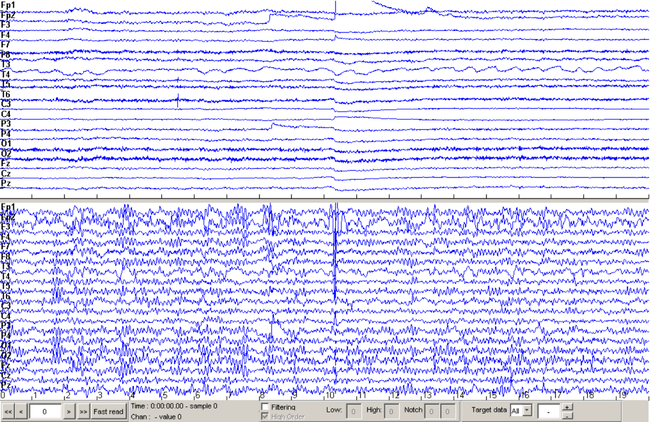
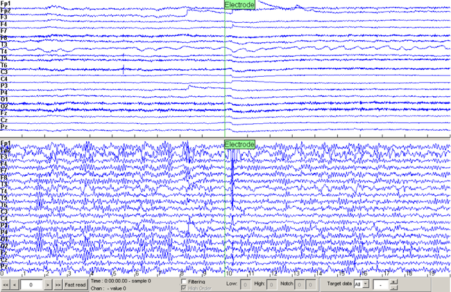
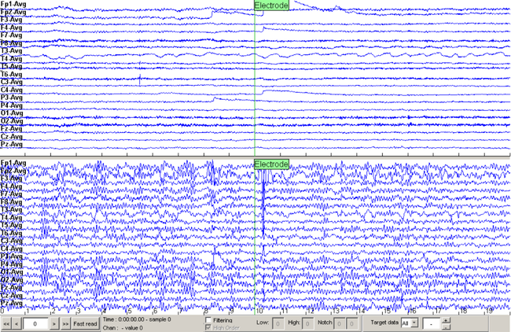
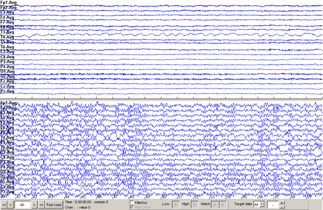
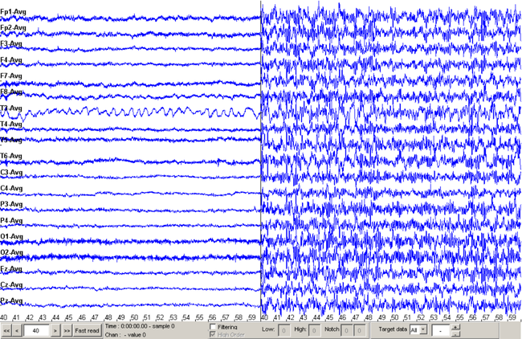
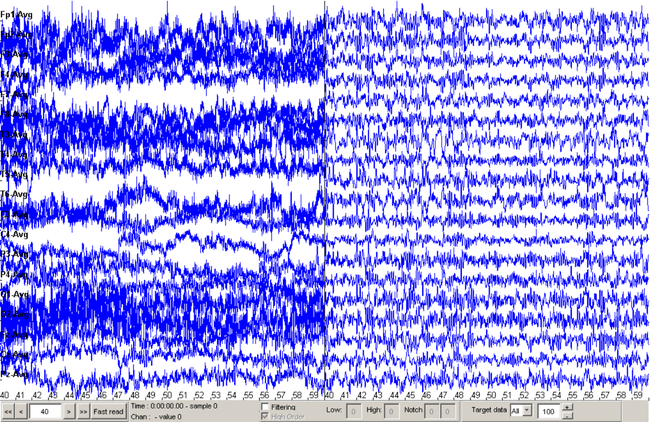
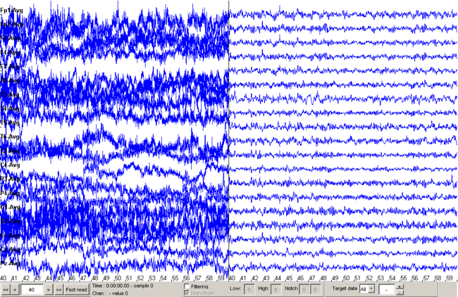
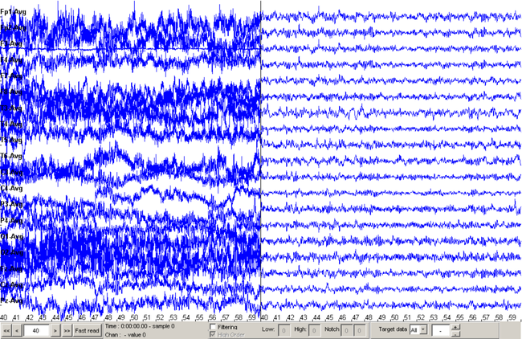

BioSigPlot demonstration
Example with raw EEG and AFOP filtered EEG
Load and plot the Signals
load filterdemo
a=BioSigPlot({data fdata},'srate',250,'Montage','1020system19','video','videodemo.avi');

Define Events to plot on BioSigPlot
a.Evts={10 'Electrode';64 'Muscle';86 'Muscle';110,'End HVT';144 'Smile'};

Change the Montage to Mean Reference Montage (Note that the second dataset is already Mean referenced)
a.MontageRef=2;

Move through Time
a.Time=40;

Change to Horizontal View
a.DataView='Horizontal';

Change Scales of the 2 Datasets
a.Spacing=100;

Change Scales on the second dataset only
a.Spacing(2)=200;

Change the scale of the third electrod on dataset 1 (2nd Montage ie Mean Reference)
a.Montage{1}(2).mat(3,:)=a.Montage{1}(2).mat(3,:)/10;
